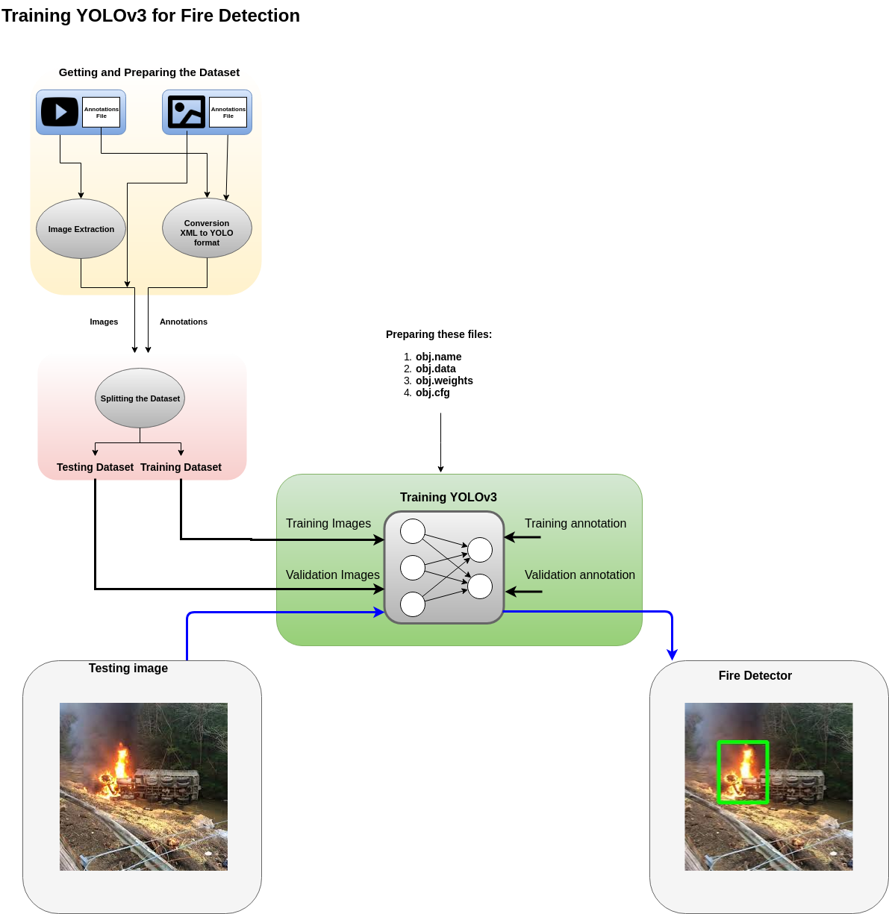
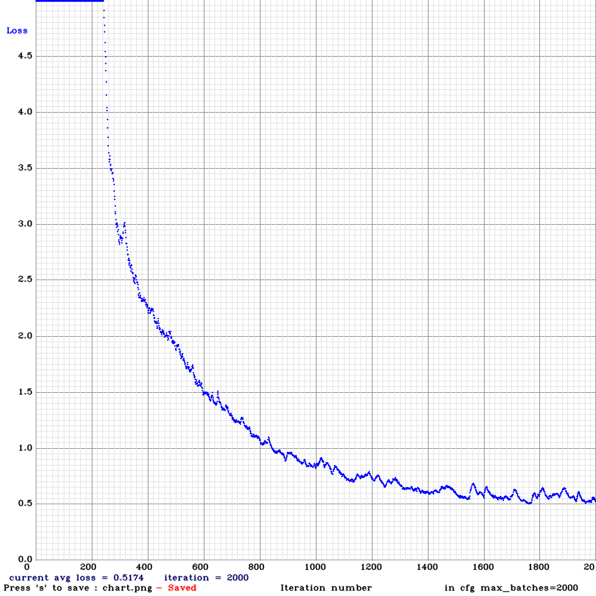
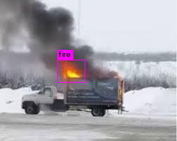

YOLOv3-for-custum-objects
Training a Fire Detector
This folder illustrate the steps for training YOLOv3 and YOLOv3-tiny to detect fire in images and videos.
First a fire dataset of labeled images is collected from internet. The images with their annotations have been prepared and converted into YOLO format and put into one folder to gather all the data. Therefore, the data folder contains images (‘*jpg’) and their associated annotations files (‘.txt’) with the same name.
The annotations need to be converted into YOLO format, which is :
<class_id, x_c/W, y_c/H, h/H, w/W>
Install AI-lab
First, launch the docker image AI-LAB to start developing by pulling it from the Docker Hub registry
docker pull aminehy/ai-lab
Run this command to let docker transfer and access the display on the screen
xhost +
Finally, run the AI-lab and start your development
docker run -it --rm -v $(pwd):/workspace -w /workspace -v /tmp/.X11-unix:/tmp/.X11-unix -e DISPLAY=$DISPLAY --runtime=nvidia -p 8888:8888 -p 6006:6006 aminehy/ai-lab
Done !
Retrain YOLO on a Costum Dataset

YOLOv3
-
Create a customized configuration file for YOLO model from
cfg/yolov3.cfgcp cfg/yolov3.cfg yolov3-obj.cfgyolov3-obj.cfg [net] # Testing # batch=64 # subdivisions=8 # Training batch=64 subdivisions=16 width=416 height=416 channels=3 momentum=0.9 decay=0.0005 angle=0 saturation = 1.5 exposure = 1.5 hue=.1 ... -
Open
yolov3-obj.cfgand edit its content with the appropriate information. In this application we have only one object to detect, ‘fire’, thus,nb_class = 1* batch = 64 * subdivision=8 (increase if `Out of memory`) * filters = (nb_class+5)*3: filters = 255 => filter = 18 * classes = nb_class: classes = 80 => classes = 1 * max_batches=classes*2000: max_batches = 2000 * steps=80% and 90% of max_batches : steps = 1600, 1800 -
Create a file
train.txtthat lists paths of all annotated images (*.jpg) of the datasetdata/obj/train.txt data/obj/pic (132).jpg data/obj/img (42).jpg data/obj/img (90).jpg data/obj/pic (148).jpg data/obj/small (82).jpg data/obj/small (55).jpg data/obj/small (73).jpg data/obj/small (53).jpg data/obj/pic (42).jpg ... -
Create
obj.namesand list the classes namesobj.names fire -
Create and setup a data file
obj.dataobj.data classes = 1 train = train.txt valid = train.txt names = obj.names backup = backup/ -
Download pre-trained weights for the convolutional layers (154 MB): https://pjreddie.com/media/files/darknet53.conv.74
-
Start training by using the command line
./darknet detector train yolov3-obj.cfg obj.data darknet53.conv.74 -
test:
./darknet detector test obj.data yolov3-obj.cfg backup/yolov3-obj_final.weights
YOLOv3-tiny
-
Create a customized configuration file for YOLO model from
cfg/yolov3-tiny_obj.cfgcp cfg/yolov3.cfg yolov3-obj.cfgyolov3-obj.cfg [net] # Testing # batch=64 # subdivisions=8 # Training batch=64 subdivisions=16 width=416 height=416 channels=3 momentum=0.9 decay=0.0005 angle=0 saturation = 1.5 exposure = 1.5 hue=.1 ... -
Open
yolov3-obj.cfgand edit its content with the appropriate information. In this application we have only one object to detect, ‘fire’, thus,nb_class = 1* batch = 64 * subdivision=8 (increase if `Out of memory`) * filters = (nb_class+5)*3: filters = 255 => filter = 18 * classes = nb_class: classes = 80 => classes = 1 * max_batches=classes*2000: max_batches = 2000 * steps=80% and 90% of max_batches : steps = 1600, 1800 -
Get pre-trained weights
yolov3-tiny.conv.15
./darknet partial cfg/yolov3-tiny.cfg fire/model/yolov3-tiny.weights fire/model/yolov3-tiny.conv.15 15
- Training
./darknet detector train obj.data yolov3-tiny-obj.cfg fire/model/yolov3-tiny.conv.15
- Results
v3 (mse loss, Normalizer: (iou: 0.750000, cls: 1.000000) Region 23 Avg (IOU: 0.664938, GIOU: 0.652729), Class: 0.999684, Obj: 0.376908, No Obj: 0.000314, .5R: 1.000000, .75R: 0.000000, count: 3
2000: 0.604868, 0.560218 avg loss, 0.000010 rate, 1.346011 seconds, 128000 images
Saving weights to backup//yolov3-tiny-obj_2000.weights
Saving weights to backup//yolov3-tiny-obj_last.weights
Saving weights to backup//yolov3-tiny-obj_final.weights

Test of the Trained Fire Detection Application
(Note: You might want to recompile the DarkNet on your computer: Edit the Makefile.txt then run make)
Image
Detect fire in an imahge file
```
./darknet detector test fire/data/obj.data fire/cfg/yolov3-tiny-obj.cfg fire/model/yolov3-tiny-obj_final.weights fire/data/obj/img (9).jpg
```

Video
-
Detect fire in real-time video stream from webcam
./darknet detector demo fire/data/obj.data fire/cfg/yolov3-tiny-obj.cfg fire/model/yolov3-tiny-obj_final.weightsNote: add the option to save the output video: -out_filename filename.mp4
-
Test on video stream from file
./darknet detector demo fire/data/obj.data fire/cfg/yolov3-tiny-obj.cfg fire/model/yolov3-tiny-obj_final.weights fire/videos/test.mp4 -
Example:
./darknet detector demo fire/data/obj.data fire/cfg/yolov3-tiny-obj.cfg fire/model/yolov3-tiny-obj_final.weights fire/videos/DJI_0070.MOV -out_filename ./fire/videos/DJI_0070_output.mp4
Pre-trained Models
There are weights-file for different cfg-files (smaller size -> faster speed & lower accuracy:
-
yolov3-openimages.cfg(247 MB COCO Yolo v3) - requires 4 GB GPU-RAM: https://pjreddie.com/media/files/yolov3-openimages.weights -
yolov3-spp.cfg(240 MB COCO Yolo v3) - requires 4 GB GPU-RAM: https://pjreddie.com/media/files/yolov3-spp.weights -
yolov3.cfg(236 MB COCO Yolo v3) - requires 4 GB GPU-RAM: https://pjreddie.com/media/files/yolov3.weights -
yolov3-tiny.cfg(34 MB COCO Yolo v3 tiny) - requires 1 GB GPU-RAM: https://pjreddie.com/media/files/yolov3-tiny.weights -
enet-coco.cfg(EfficientNetb0-Yolo- 45.5% mAP@0.5 - 3.7 BFlops)
enetb0-coco_final.weights and yolov3-tiny-prn.cfg (33.1% mAP@0.5 - 3.5 BFlops - more)
Reference
- https://github.com/AlexeyAB/darknet